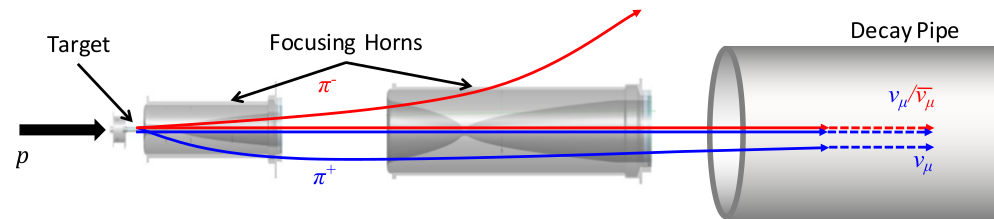
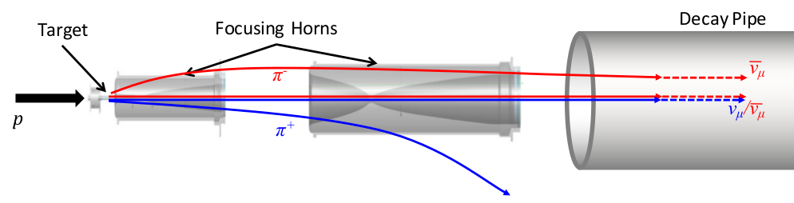

MINOS or Main Injector Neutrino Oscillation Search was an on-axis long-baseline neutrino oscillation experiment that was exposed to the the NuMI neutrino beam from Fermilab. It used a Near Detector (ND) with a mass of 0.98\(~\) metric-kiloton located 1.04\(~\)km from the NuMI target and a Far Detector (FD) with a mass of 5.4\(~\) metric-kiloton located 735\(~\)km from the target in the Soudan Underground Mine. These detectors were functionally equivalent magnetized steel-scintillator, tracking-sampling calorimeters. The detectors consisted of alternating planes of 2.54\(~\)cm thick steel plates and 1\(~\)cm thick polystyrene-based (plastic) scintillator strips. The scintillation light resulting from particle interactions, following the initial neutrino interaction was collected and guided by wavelength-shifting (WLS) fibers to photomultipliers (PMTs). The PMT signals were used to determine the flavor and energy of the interacting neutrino. Each detector was magnetized by a coil that ran through the center of the detector, parallel to its length. The magnetic field allowed the MINOS detectors to distinguish between \(\nu_\mu\) and \(\overline{\nu}_\mu\) charged-current (CC) interactions based on the curvature of the resulting muon. The ND was used to monitor the neutrino beam before significant neutrino oscillations take place. The FD was used to measure the deficit in neutrino events due to oscillations occurring along the way from Fermilab to Soudan, a trip that takes less than 3 milliseconds for these neutrinos.

The NuMI beam is produced by colliding 120\(~\)GeV protons into a graphite target. The resulting pions and kaons are then focused by two magnetic horns into a decay pipe, where they decay into muon (anti)neutrinos. The magnetic horns allow the beam to be operated in either a \(\nu_\mu\) or \(\overline{\nu}_\mu\) mode. In June 2016 the NuMI beam achieved a beam power of 700\(~\)kW making it the most powerful neutrino beamline, currently used for the NO$\nu$A experiment (see below).
 
Caption goes here!
The MINOS experiment was operational between July 2003 and April 2012, detecting neutrinos from the NuMI neutrino beam with a peak neutrino energy of about 3\(~\)GeV. MINOS was continued by MINOS+, which collected data between October 2013 and June 2016, using a NuMI neutrino beam with a peak neutrino energy shifted to about 7\(~\)GeV. This shift to higher energies away from the three-flavor oscillation maximum around 1.5\(~\)GeV increased the sensitivity to neutrino oscillation models beyond the three-flavor paradigm, including sterile neutrinos, large extra dimensions, and non-standard interactions.
The UTKL Research Group has been active on all fronts in the MINOS and MINOS+ Experiments, from detector R\(\&\)D, data acquisition, service work, and simulation, to data analysis. Currently we are analyzing the final MINOS+ data.